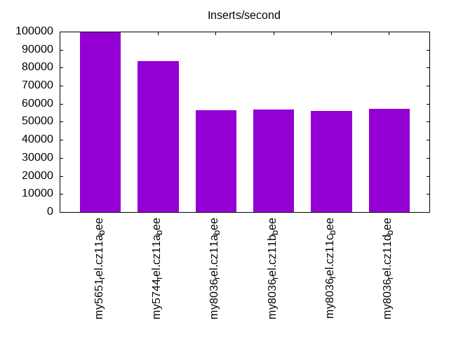
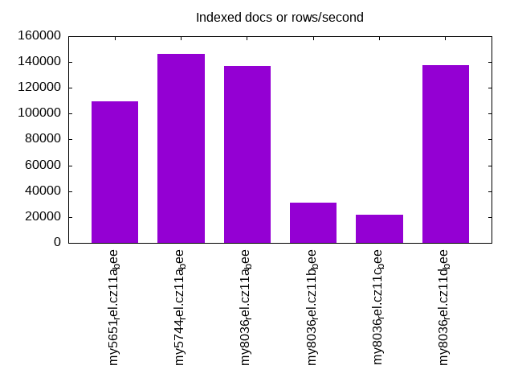
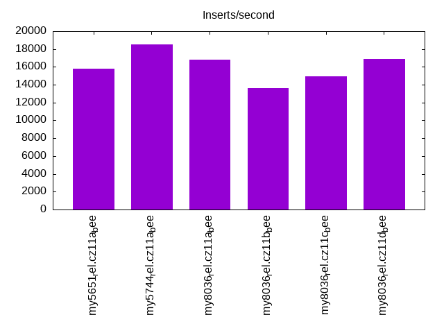
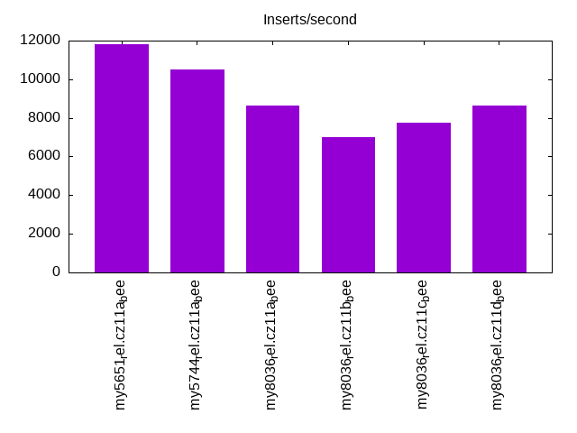
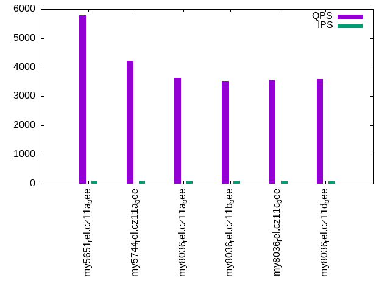
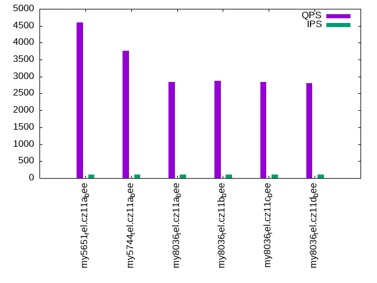
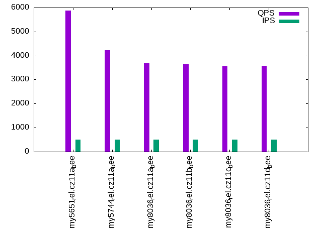
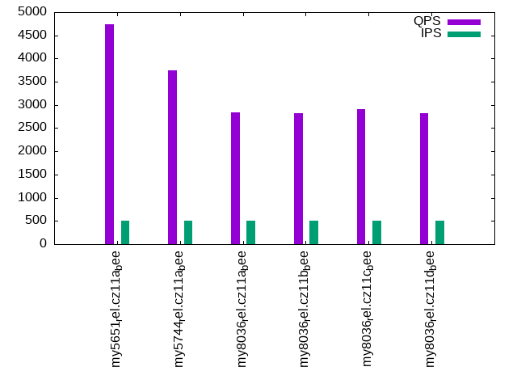
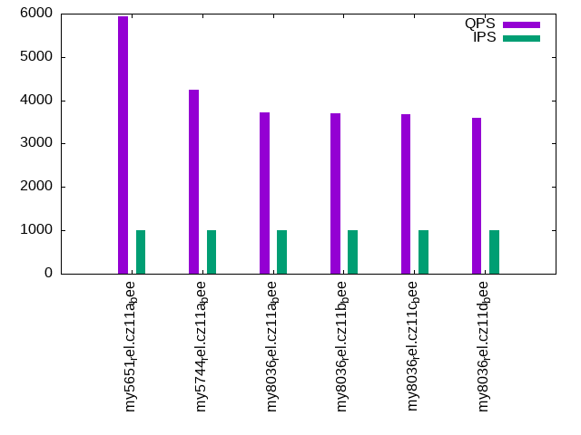
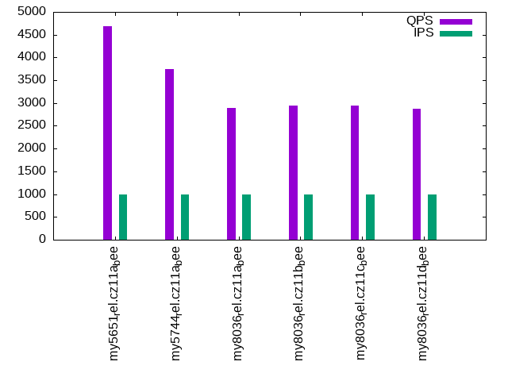

This is a report for the insert benchmark with 30M docs and 1 client(s). It is generated by scripts (bash, awk, sed) and Tufte might not be impressed. An overview of the insert benchmark is here and a short update is here. Below, by DBMS, I mean DBMS+version.config. An example is my8020.c10b40 where my means MySQL, 8020 is version 8.0.20 and c10b40 is the name for the configuration file.
The test server has 8 AMD cores, 16G RAM and an NVMe SSD. It is described here as the Beelink. The benchmark was run with 1 client and there were 1 or 3 connections per client (1 for queries or inserts without rate limits, 1+1 for rate limited inserts+deletes). It uses 1 table. It loads 30M rows per table without secondary indexes, creates 3 secondary indexes per table, then inserts 40m+10m rows per table with a delete per insert to avoid growing the table. It then does 6 read+write tests for 1800s each that do queries as fast as possible with 100,100,500,500,1000,1000 inserts/s and the same for deletes/s per client concurrent with the queries. The database is cached in memory. Clients and the DBMS share one server. The per-database configs are in the per-database subdirectories here.
The tested DBMS are:
The numbers are inserts/s for l.i0, l.i1 and l.i2, indexed docs (or rows) /s for l.x and queries/s for qr100, qp100 thru qr1000, qp1000" The values are the average rate over the entire test for inserts (IPS) and queries (QPS). The range of values for IPS and QPS is split into 3 parts: bottom 25%, middle 50%, top 25%. Values in the bottom 25% have a red background, values in the top 25% have a green background and values in the middle have no color. A gray background is used for values that can be ignored because the DBMS did not sustain the target insert rate. Red backgrounds are not used when the minimum value is within 80% of the max value.
| dbms | l.i0 | l.x | l.i1 | l.i2 | qr100 | qp100 | qr500 | qp500 | qr1000 | qp1000 |
|---|---|---|---|---|---|---|---|---|---|---|
| my5651_rel.cz11a_bee | 99668 | 109489 | 15804 | 11792 | 5784 | 4595 | 5873 | 4738 | 5935 | 4679 |
| my5744_rel.cz11a_bee | 83565 | 146342 | 18484 | 10493 | 4224 | 3756 | 4229 | 3751 | 4241 | 3753 |
| my8036_rel.cz11a_bee | 56604 | 136987 | 16835 | 8643 | 3642 | 2842 | 3674 | 2838 | 3723 | 2885 |
| my8036_rel.cz11b_bee | 56818 | 30832 | 13642 | 7027 | 3532 | 2876 | 3634 | 2823 | 3701 | 2942 |
| my8036_rel.cz11c_bee | 56180 | 21614 | 14909 | 7770 | 3580 | 2837 | 3558 | 2908 | 3677 | 2938 |
| my8036_rel.cz11d_bee | 57034 | 137615 | 16906 | 8650 | 3604 | 2808 | 3575 | 2830 | 3598 | 2867 |
This table has relative throughput, throughput for the DBMS relative to the DBMS in the first line, using the absolute throughput from the previous table. Values less than 0.95 have a yellow background. Values greater than 1.05 have a blue background.
| dbms | l.i0 | l.x | l.i1 | l.i2 | qr100 | qp100 | qr500 | qp500 | qr1000 | qp1000 |
|---|---|---|---|---|---|---|---|---|---|---|
| my5651_rel.cz11a_bee | 1.00 | 1.00 | 1.00 | 1.00 | 1.00 | 1.00 | 1.00 | 1.00 | 1.00 | 1.00 |
| my5744_rel.cz11a_bee | 0.84 | 1.34 | 1.17 | 0.89 | 0.73 | 0.82 | 0.72 | 0.79 | 0.71 | 0.80 |
| my8036_rel.cz11a_bee | 0.57 | 1.25 | 1.07 | 0.73 | 0.63 | 0.62 | 0.63 | 0.60 | 0.63 | 0.62 |
| my8036_rel.cz11b_bee | 0.57 | 0.28 | 0.86 | 0.60 | 0.61 | 0.63 | 0.62 | 0.60 | 0.62 | 0.63 |
| my8036_rel.cz11c_bee | 0.56 | 0.20 | 0.94 | 0.66 | 0.62 | 0.62 | 0.61 | 0.61 | 0.62 | 0.63 |
| my8036_rel.cz11d_bee | 0.57 | 1.26 | 1.07 | 0.73 | 0.62 | 0.61 | 0.61 | 0.60 | 0.61 | 0.61 |
This lists the average rate of inserts/s for the tests that do inserts concurrent with queries. For such tests the query rate is listed in the table above. The read+write tests are setup so that the insert rate should match the target rate every second. Cells that are not at least 95% of the target have a red background to indicate a failure to satisfy the target.
| dbms | qr100.L1 | qp100.L2 | qr500.L3 | qp500.L4 | qr1000.L5 | qp1000.L6 |
|---|---|---|---|---|---|---|
| my5651_rel.cz11a_bee | 100 | 100 | 499 | 499 | 998 | 998 |
| my5744_rel.cz11a_bee | 100 | 100 | 499 | 499 | 998 | 998 |
| my8036_rel.cz11a_bee | 100 | 100 | 499 | 499 | 998 | 998 |
| my8036_rel.cz11b_bee | 100 | 100 | 499 | 499 | 998 | 998 |
| my8036_rel.cz11c_bee | 100 | 100 | 499 | 499 | 998 | 998 |
| my8036_rel.cz11d_bee | 100 | 100 | 499 | 499 | 998 | 998 |
| target | 100 | 100 | 500 | 500 | 1000 | 1000 |
l.i0: load without secondary indexes. Graphs for performance per 1-second interval are here.
Average throughput:
Insert response time histogram: each cell has the percentage of responses that take <= the time in the header and max is the max response time in seconds. For the max column values in the top 25% of the range have a red background and in the bottom 25% of the range have a green background. The red background is not used when the min value is within 80% of the max value.
| dbms | 256us | 1ms | 4ms | 16ms | 64ms | 256ms | 1s | 4s | 16s | gt | max |
|---|---|---|---|---|---|---|---|---|---|---|---|
| my5651_rel.cz11a_bee | 88.704 | 11.182 | 0.110 | 0.002 | 0.002 | 0.098 | |||||
| my5744_rel.cz11a_bee | 1.806 | 97.855 | 0.200 | 0.138 | nonzero | 0.103 | |||||
| my8036_rel.cz11a_bee | 99.413 | 0.455 | 0.131 | 0.001 | 0.086 | ||||||
| my8036_rel.cz11b_bee | 99.397 | 0.463 | 0.139 | 0.001 | 0.108 | ||||||
| my8036_rel.cz11c_bee | 99.395 | 0.448 | 0.151 | 0.005 | 0.095 | ||||||
| my8036_rel.cz11d_bee | 99.421 | 0.443 | 0.135 | 0.001 | 0.088 |
Performance metrics for the DBMS listed above. Some are normalized by throughput, others are not. Legend for results is here.
ips qps rps rmbps wps wmbps rpq rkbpq wpi wkbpi csps cpups cspq cpupq dbgb1 dbgb2 rss maxop p50 p99 tag 99668 0 868 3.4 317.2 30.5 0.009 0.035 0.003 0.313 12115 22.6 0.122 18 2.0 17.5 2.7 0.098 99988 89302 my5651_rel.cz11a_bee 83565 0 0 0.0 278.0 25.9 0.000 0.000 0.003 0.318 8732 21.7 0.104 21 2.0 17.5 2.9 0.103 84304 77615 my5744_rel.cz11a_bee 56604 0 0 0.0 247.7 18.9 0.000 0.000 0.004 0.342 6537 20.8 0.115 29 2.0 17.6 3.0 0.086 56637 52440 my8036_rel.cz11a_bee 56818 0 0 0.0 286.0 19.1 0.000 0.000 0.005 0.343 6881 21.6 0.121 30 2.0 17.6 3.1 0.108 57135 51742 my8036_rel.cz11b_bee 56180 0 0 0.0 220.5 18.9 0.000 0.000 0.004 0.344 7337 22.3 0.131 32 2.0 17.6 3.0 0.095 56835 50343 my8036_rel.cz11c_bee 57034 0 0 0.0 249.5 19.1 0.000 0.000 0.004 0.342 6573 20.7 0.115 29 2.0 17.6 3.1 0.088 57135 53341 my8036_rel.cz11d_bee
l.x: create secondary indexes.
Average throughput:
Performance metrics for the DBMS listed above. Some are normalized by throughput, others are not. Legend for results is here.
ips qps rps rmbps wps wmbps rpq rkbpq wpi wkbpi csps cpups cspq cpupq dbgb1 dbgb2 rss maxop p50 p99 tag 109489 0 10 0.0 857.0 113.1 0.000 0.000 0.008 1.058 2388 11.6 0.022 8 4.2 19.7 4.8 0.002 NA NA my5651_rel.cz11a_bee 146342 0 0 0.0 1592.3 142.4 0.000 0.000 0.011 0.996 9469 12.3 0.065 7 4.6 20.1 4.4 0.002 NA NA my5744_rel.cz11a_bee 136987 0 705 44.6 2524.3 150.7 0.005 0.333 0.018 1.127 9433 43.3 0.069 25 4.5 20.1 5.3 0.003 NA NA my8036_rel.cz11a_bee 30832 0 156 9.9 820.3 36.1 0.005 0.328 0.027 1.200 5284 10.8 0.171 28 4.5 20.1 5.4 0.003 NA NA my8036_rel.cz11b_bee 21614 0 109 6.9 573.2 25.3 0.005 0.328 0.027 1.200 4920 7.9 0.228 29 4.5 20.1 5.4 0.003 NA NA my8036_rel.cz11c_bee 137615 0 705 44.6 2596.0 151.8 0.005 0.332 0.019 1.130 9518 43.7 0.069 25 4.5 20.1 5.3 0.003 NA NA my8036_rel.cz11d_bee
l.i1: continue load after secondary indexes created with 50 inserts per transaction. Graphs for performance per 1-second interval are here.
Average throughput:
Insert response time histogram: each cell has the percentage of responses that take <= the time in the header and max is the max response time in seconds. For the max column values in the top 25% of the range have a red background and in the bottom 25% of the range have a green background. The red background is not used when the min value is within 80% of the max value.
| dbms | 256us | 1ms | 4ms | 16ms | 64ms | 256ms | 1s | 4s | 16s | gt | max |
|---|---|---|---|---|---|---|---|---|---|---|---|
| my5651_rel.cz11a_bee | 90.441 | 9.372 | 0.187 | 0.001 | 0.106 | ||||||
| my5744_rel.cz11a_bee | 94.618 | 5.285 | 0.096 | 0.001 | 0.076 | ||||||
| my8036_rel.cz11a_bee | 95.888 | 3.954 | 0.156 | 0.002 | 0.105 | ||||||
| my8036_rel.cz11b_bee | 88.756 | 10.108 | 1.125 | 0.011 | 0.191 | ||||||
| my8036_rel.cz11c_bee | 91.647 | 7.725 | 0.579 | 0.044 | 0.004 | 0.001 | 1.066 | ||||
| my8036_rel.cz11d_bee | 95.949 | 3.895 | 0.154 | 0.002 | 0.104 |
Delete response time histogram: each cell has the percentage of responses that take <= the time in the header and max is the max response time in seconds. For the max column values in the top 25% of the range have a red background and in the bottom 25% of the range have a green background. The red background is not used when the min value is within 80% of the max value.
| dbms | 256us | 1ms | 4ms | 16ms | 64ms | 256ms | 1s | 4s | 16s | gt | max |
|---|---|---|---|---|---|---|---|---|---|---|---|
| my5651_rel.cz11a_bee | 96.240 | 3.661 | 0.099 | nonzero | 0.066 | ||||||
| my5744_rel.cz11a_bee | 96.864 | 3.118 | 0.017 | 0.001 | 0.075 | ||||||
| my8036_rel.cz11a_bee | 97.676 | 2.274 | 0.049 | 0.001 | 0.105 | ||||||
| my8036_rel.cz11b_bee | 92.513 | 6.842 | 0.638 | 0.007 | 0.105 | ||||||
| my8036_rel.cz11c_bee | 94.974 | 4.752 | 0.254 | 0.016 | 0.004 | 0.001 | 1.049 | ||||
| my8036_rel.cz11d_bee | 97.608 | 2.343 | 0.047 | 0.002 | 0.104 |
Performance metrics for the DBMS listed above. Some are normalized by throughput, others are not. Legend for results is here.
ips qps rps rmbps wps wmbps rpq rkbpq wpi wkbpi csps cpups cspq cpupq dbgb1 dbgb2 rss maxop p50 p99 tag 15804 0 466 1.8 1820.3 77.2 0.029 0.118 0.115 5.003 21838 47.2 1.382 239 6.1 21.6 6.8 0.106 16831 4645 my5651_rel.cz11a_bee 18484 0 0 0.0 2024.5 87.4 0.000 0.000 0.110 4.843 17599 53.7 0.952 232 6.2 21.7 7.1 0.076 19379 5494 my5744_rel.cz11a_bee 16835 0 61 1.0 2782.0 102.0 0.004 0.058 0.165 6.206 38919 38.5 2.312 183 6.5 22.4 7.9 0.105 17580 5244 my8036_rel.cz11a_bee 13642 0 40 0.6 1602.6 60.8 0.003 0.047 0.117 4.563 34147 37.2 2.503 218 6.1 21.8 7.3 0.191 14041 3995 my8036_rel.cz11b_bee 14909 0 6 0.3 982.0 48.3 0.000 0.018 0.066 3.314 33407 36.8 2.241 197 6.3 22.1 6.9 1.066 16432 2547 my8036_rel.cz11c_bee 16906 0 61 1.0 2752.6 101.3 0.004 0.058 0.163 6.135 38939 38.6 2.303 183 6.5 22.4 7.9 0.104 17580 5244 my8036_rel.cz11d_bee
l.i2: continue load after secondary indexes created with 5 inserts per transaction. Graphs for performance per 1-second interval are here.
Average throughput:
Insert response time histogram: each cell has the percentage of responses that take <= the time in the header and max is the max response time in seconds. For the max column values in the top 25% of the range have a red background and in the bottom 25% of the range have a green background. The red background is not used when the min value is within 80% of the max value.
| dbms | 256us | 1ms | 4ms | 16ms | 64ms | 256ms | 1s | 4s | 16s | gt | max |
|---|---|---|---|---|---|---|---|---|---|---|---|
| my5651_rel.cz11a_bee | 8.832 | 90.820 | 0.127 | 0.221 | 0.001 | 0.060 | |||||
| my5744_rel.cz11a_bee | 0.136 | 98.727 | 0.889 | 0.247 | 0.001 | 0.060 | |||||
| my8036_rel.cz11a_bee | 99.384 | 0.360 | 0.254 | 0.002 | nonzero | 0.102 | |||||
| my8036_rel.cz11b_bee | 98.023 | 0.884 | 0.997 | 0.093 | 0.002 | 0.107 | |||||
| my8036_rel.cz11c_bee | 98.793 | 0.524 | 0.656 | 0.025 | 0.002 | 0.118 | |||||
| my8036_rel.cz11d_bee | 99.375 | 0.369 | 0.254 | 0.002 | 0.001 | 0.102 |
Delete response time histogram: each cell has the percentage of responses that take <= the time in the header and max is the max response time in seconds. For the max column values in the top 25% of the range have a red background and in the bottom 25% of the range have a green background. The red background is not used when the min value is within 80% of the max value.
| dbms | 256us | 1ms | 4ms | 16ms | 64ms | 256ms | 1s | 4s | 16s | gt | max |
|---|---|---|---|---|---|---|---|---|---|---|---|
| my5651_rel.cz11a_bee | 13.136 | 86.570 | 0.074 | 0.220 | 0.001 | 0.060 | |||||
| my5744_rel.cz11a_bee | 0.424 | 98.416 | 0.914 | 0.245 | 0.001 | 0.060 | |||||
| my8036_rel.cz11a_bee | 99.545 | 0.204 | 0.249 | 0.002 | nonzero | 0.102 | |||||
| my8036_rel.cz11b_bee | 98.408 | 0.542 | 0.965 | 0.081 | 0.003 | 0.102 | |||||
| my8036_rel.cz11c_bee | 99.037 | 0.280 | 0.661 | 0.021 | 0.001 | 0.108 | |||||
| my8036_rel.cz11d_bee | 99.547 | 0.204 | 0.246 | 0.002 | 0.001 | 0.102 |
Performance metrics for the DBMS listed above. Some are normalized by throughput, others are not. Legend for results is here.
ips qps rps rmbps wps wmbps rpq rkbpq wpi wkbpi csps cpups cspq cpupq dbgb1 dbgb2 rss maxop p50 p99 tag 11792 0 2112 8.3 1359.3 54.8 0.179 0.716 0.115 4.761 93912 44.5 7.964 302 6.1 21.6 6.8 0.060 11756 10878 my5651_rel.cz11a_bee 10493 0 0 0.0 1219.9 49.4 0.000 0.000 0.116 4.817 44878 42.2 4.277 322 6.2 21.7 7.1 0.060 10498 9789 my5744_rel.cz11a_bee 8643 0 0 0.0 1481.9 50.5 0.000 0.000 0.171 5.978 51714 35.6 5.983 330 6.5 22.4 7.9 0.102 8659 7781 my8036_rel.cz11a_bee 7027 0 0 0.0 1429.2 41.4 0.000 0.000 0.203 6.034 45076 36.5 6.414 416 6.1 21.8 7.3 0.107 7062 5594 my8036_rel.cz11b_bee 7770 0 0 0.0 978.9 30.4 0.000 0.000 0.126 4.009 46777 34.0 6.020 350 6.3 22.1 6.8 0.118 7841 6209 my8036_rel.cz11c_bee 8650 0 0 0.0 1469.8 50.2 0.000 0.000 0.170 5.939 51900 35.6 6.000 329 6.5 22.4 7.9 0.102 8669 7771 my8036_rel.cz11d_bee
qr100.L1: range queries with 100 insert/s per client. Graphs for performance per 1-second interval are here.
Average throughput:
Query response time histogram: each cell has the percentage of responses that take <= the time in the header and max is the max response time in seconds. For max values in the top 25% of the range have a red background and in the bottom 25% of the range have a green background. The red background is not used when the min value is within 80% of the max value.
| dbms | 256us | 1ms | 4ms | 16ms | 64ms | 256ms | 1s | 4s | 16s | gt | max |
|---|---|---|---|---|---|---|---|---|---|---|---|
| my5651_rel.cz11a_bee | 97.609 | 2.384 | 0.003 | 0.004 | nonzero | 0.023 | |||||
| my5744_rel.cz11a_bee | 74.928 | 25.071 | 0.001 | nonzero | 0.005 | ||||||
| my8036_rel.cz11a_bee | 59.842 | 40.157 | 0.001 | nonzero | 0.005 | ||||||
| my8036_rel.cz11b_bee | 53.783 | 46.217 | nonzero | nonzero | 0.007 | ||||||
| my8036_rel.cz11c_bee | 56.109 | 43.891 | 0.001 | nonzero | nonzero | 0.050 | |||||
| my8036_rel.cz11d_bee | 56.269 | 43.730 | 0.001 | nonzero | 0.005 |
Insert response time histogram: each cell has the percentage of responses that take <= the time in the header and max is the max response time in seconds. For max values in the top 25% of the range have a red background and in the bottom 25% of the range have a green background. The red background is not used when the min value is within 80% of the max value.
| dbms | 256us | 1ms | 4ms | 16ms | 64ms | 256ms | 1s | 4s | 16s | gt | max |
|---|---|---|---|---|---|---|---|---|---|---|---|
| my5651_rel.cz11a_bee | 47.556 | 49.806 | 2.639 | 0.056 | |||||||
| my5744_rel.cz11a_bee | 99.472 | 0.528 | 0.013 | ||||||||
| my8036_rel.cz11a_bee | 98.889 | 1.083 | 0.028 | 0.026 | |||||||
| my8036_rel.cz11b_bee | 99.528 | 0.472 | 0.015 | ||||||||
| my8036_rel.cz11c_bee | 99.278 | 0.667 | 0.028 | 0.028 | 0.085 | ||||||
| my8036_rel.cz11d_bee | 99.472 | 0.528 | 0.014 |
Delete response time histogram: each cell has the percentage of responses that take <= the time in the header and max is the max response time in seconds. For max values in the top 25% of the range have a red background and in the bottom 25% of the range have a green background. The red background is not used when the min value is within 80% of the max value.
| dbms | 256us | 1ms | 4ms | 16ms | 64ms | 256ms | 1s | 4s | 16s | gt | max |
|---|---|---|---|---|---|---|---|---|---|---|---|
| my5651_rel.cz11a_bee | 48.972 | 49.056 | 1.972 | 0.062 | |||||||
| my5744_rel.cz11a_bee | 99.639 | 0.361 | 0.012 | ||||||||
| my8036_rel.cz11a_bee | 99.028 | 0.944 | 0.028 | 0.019 | |||||||
| my8036_rel.cz11b_bee | 99.667 | 0.333 | 0.013 | ||||||||
| my8036_rel.cz11c_bee | 99.417 | 0.472 | 0.056 | 0.056 | 0.091 | ||||||
| my8036_rel.cz11d_bee | 99.500 | 0.500 | 0.015 |
Performance metrics for the DBMS listed above. Some are normalized by throughput, others are not. Legend for results is here.
ips qps rps rmbps wps wmbps rpq rkbpq wpi wkbpi csps cpups cspq cpupq dbgb1 dbgb2 rss maxop p50 p99 tag 100 5784 4 0.0 215.4 6.5 0.001 0.003 2.158 66.706 22963 13.2 3.970 183 6.1 21.6 6.8 0.023 5752 5578 my5651_rel.cz11a_bee 100 4224 0 0.0 123.4 3.6 0.000 0.000 1.236 37.183 16702 12.8 3.955 242 6.2 21.7 7.1 0.005 4155 4010 my5744_rel.cz11a_bee 100 3642 0 0.0 165.3 4.2 0.000 0.000 1.657 42.812 14954 13.2 4.105 290 6.5 22.4 7.9 0.005 3612 3436 my8036_rel.cz11a_bee 100 3532 0 0.0 36.6 0.8 0.000 0.000 0.367 7.985 14170 12.9 4.012 292 6.1 21.8 7.3 0.007 3516 3388 my8036_rel.cz11b_bee 100 3580 0 0.0 111.3 2.0 0.000 0.000 1.115 20.356 14750 13.6 4.120 304 6.3 22.1 6.8 0.050 3547 3356 my8036_rel.cz11c_bee 100 3604 0 0.0 152.7 3.9 0.000 0.000 1.530 39.549 14767 13.0 4.097 289 6.5 22.4 7.9 0.005 3564 3356 my8036_rel.cz11d_bee
qp100.L2: point queries with 100 insert/s per client. Graphs for performance per 1-second interval are here.
Average throughput:
Query response time histogram: each cell has the percentage of responses that take <= the time in the header and max is the max response time in seconds. For max values in the top 25% of the range have a red background and in the bottom 25% of the range have a green background. The red background is not used when the min value is within 80% of the max value.
| dbms | 256us | 1ms | 4ms | 16ms | 64ms | 256ms | 1s | 4s | 16s | gt | max |
|---|---|---|---|---|---|---|---|---|---|---|---|
| my5651_rel.cz11a_bee | 94.342 | 5.648 | 0.007 | 0.003 | 0.011 | ||||||
| my5744_rel.cz11a_bee | 85.558 | 14.437 | 0.005 | 0.004 | |||||||
| my8036_rel.cz11a_bee | 10.870 | 89.128 | 0.002 | nonzero | 0.004 | ||||||
| my8036_rel.cz11b_bee | 13.687 | 86.311 | 0.001 | nonzero | 0.005 | ||||||
| my8036_rel.cz11c_bee | 12.590 | 87.408 | 0.002 | 0.003 | |||||||
| my8036_rel.cz11d_bee | 9.534 | 90.464 | 0.002 | 0.004 |
Insert response time histogram: each cell has the percentage of responses that take <= the time in the header and max is the max response time in seconds. For max values in the top 25% of the range have a red background and in the bottom 25% of the range have a green background. The red background is not used when the min value is within 80% of the max value.
| dbms | 256us | 1ms | 4ms | 16ms | 64ms | 256ms | 1s | 4s | 16s | gt | max |
|---|---|---|---|---|---|---|---|---|---|---|---|
| my5651_rel.cz11a_bee | 50.583 | 49.083 | 0.333 | 0.023 | |||||||
| my5744_rel.cz11a_bee | 99.417 | 0.583 | 0.010 | ||||||||
| my8036_rel.cz11a_bee | 99.639 | 0.361 | 0.016 | ||||||||
| my8036_rel.cz11b_bee | 99.694 | 0.306 | 0.009 | ||||||||
| my8036_rel.cz11c_bee | 99.306 | 0.667 | 0.028 | 0.018 | |||||||
| my8036_rel.cz11d_bee | 99.722 | 0.250 | 0.028 | 0.021 |
Delete response time histogram: each cell has the percentage of responses that take <= the time in the header and max is the max response time in seconds. For max values in the top 25% of the range have a red background and in the bottom 25% of the range have a green background. The red background is not used when the min value is within 80% of the max value.
| dbms | 256us | 1ms | 4ms | 16ms | 64ms | 256ms | 1s | 4s | 16s | gt | max |
|---|---|---|---|---|---|---|---|---|---|---|---|
| my5651_rel.cz11a_bee | 53.556 | 46.250 | 0.194 | 0.018 | |||||||
| my5744_rel.cz11a_bee | 99.667 | 0.333 | 0.010 | ||||||||
| my8036_rel.cz11a_bee | 99.806 | 0.194 | 0.008 | ||||||||
| my8036_rel.cz11b_bee | 99.750 | 0.250 | 0.009 | ||||||||
| my8036_rel.cz11c_bee | 99.472 | 0.528 | 0.013 | ||||||||
| my8036_rel.cz11d_bee | 99.806 | 0.194 | 0.014 |
Performance metrics for the DBMS listed above. Some are normalized by throughput, others are not. Legend for results is here.
ips qps rps rmbps wps wmbps rpq rkbpq wpi wkbpi csps cpups cspq cpupq dbgb1 dbgb2 rss maxop p50 p99 tag 100 4595 4 0.0 2.2 0.1 0.001 0.003 0.022 1.193 18669 13.6 4.063 237 6.1 21.6 6.8 0.011 4555 4298 my5651_rel.cz11a_bee 100 3756 0 0.0 32.9 0.9 0.000 0.000 0.329 9.048 15400 14.0 4.101 298 6.2 21.7 7.1 0.004 3692 3484 my5744_rel.cz11a_bee 100 2842 0 0.0 40.9 1.1 0.000 0.000 0.409 10.861 12111 13.3 4.261 374 6.5 22.4 7.9 0.004 2748 2605 my8036_rel.cz11a_bee 100 2876 0 0.0 14.2 0.3 0.000 0.000 0.142 2.970 12190 13.3 4.238 370 6.1 21.8 7.3 0.005 2750 2621 my8036_rel.cz11b_bee 100 2837 0 0.0 19.1 0.3 0.000 0.000 0.191 2.984 12066 13.1 4.253 369 6.3 22.1 6.8 0.003 2733 2589 my8036_rel.cz11c_bee 100 2808 0 0.0 42.5 1.1 0.000 0.000 0.426 11.402 11973 13.3 4.264 379 6.5 22.4 7.9 0.004 2717 2589 my8036_rel.cz11d_bee
qr500.L3: range queries with 500 insert/s per client. Graphs for performance per 1-second interval are here.
Average throughput:
Query response time histogram: each cell has the percentage of responses that take <= the time in the header and max is the max response time in seconds. For max values in the top 25% of the range have a red background and in the bottom 25% of the range have a green background. The red background is not used when the min value is within 80% of the max value.
| dbms | 256us | 1ms | 4ms | 16ms | 64ms | 256ms | 1s | 4s | 16s | gt | max |
|---|---|---|---|---|---|---|---|---|---|---|---|
| my5651_rel.cz11a_bee | 97.581 | 2.412 | 0.003 | 0.003 | 0.010 | ||||||
| my5744_rel.cz11a_bee | 75.116 | 24.883 | 0.001 | nonzero | 0.005 | ||||||
| my8036_rel.cz11a_bee | 60.665 | 39.334 | 0.001 | 0.003 | |||||||
| my8036_rel.cz11b_bee | 58.989 | 41.010 | 0.001 | nonzero | 0.013 | ||||||
| my8036_rel.cz11c_bee | 53.490 | 46.507 | 0.002 | 0.001 | nonzero | 0.052 | |||||
| my8036_rel.cz11d_bee | 54.741 | 45.258 | 0.001 | nonzero | 0.005 |
Insert response time histogram: each cell has the percentage of responses that take <= the time in the header and max is the max response time in seconds. For max values in the top 25% of the range have a red background and in the bottom 25% of the range have a green background. The red background is not used when the min value is within 80% of the max value.
| dbms | 256us | 1ms | 4ms | 16ms | 64ms | 256ms | 1s | 4s | 16s | gt | max |
|---|---|---|---|---|---|---|---|---|---|---|---|
| my5651_rel.cz11a_bee | 87.278 | 12.633 | 0.089 | 0.022 | |||||||
| my5744_rel.cz11a_bee | 99.500 | 0.500 | 0.012 | ||||||||
| my8036_rel.cz11a_bee | 98.939 | 1.044 | 0.017 | 0.026 | |||||||
| my8036_rel.cz11b_bee | 99.183 | 0.789 | 0.028 | 0.037 | |||||||
| my8036_rel.cz11c_bee | 98.872 | 0.950 | 0.150 | 0.028 | 0.081 | ||||||
| my8036_rel.cz11d_bee | 99.194 | 0.789 | 0.017 | 0.025 |
Delete response time histogram: each cell has the percentage of responses that take <= the time in the header and max is the max response time in seconds. For max values in the top 25% of the range have a red background and in the bottom 25% of the range have a green background. The red background is not used when the min value is within 80% of the max value.
| dbms | 256us | 1ms | 4ms | 16ms | 64ms | 256ms | 1s | 4s | 16s | gt | max |
|---|---|---|---|---|---|---|---|---|---|---|---|
| my5651_rel.cz11a_bee | 90.000 | 9.972 | 0.028 | 0.018 | |||||||
| my5744_rel.cz11a_bee | 99.656 | 0.344 | 0.012 | ||||||||
| my8036_rel.cz11a_bee | 99.528 | 0.461 | 0.011 | 0.024 | |||||||
| my8036_rel.cz11b_bee | 99.506 | 0.433 | 0.061 | 0.048 | |||||||
| my8036_rel.cz11c_bee | 99.317 | 0.522 | 0.156 | 0.006 | 0.075 | ||||||
| my8036_rel.cz11d_bee | 99.711 | 0.278 | 0.011 | 0.023 |
Performance metrics for the DBMS listed above. Some are normalized by throughput, others are not. Legend for results is here.
ips qps rps rmbps wps wmbps rpq rkbpq wpi wkbpi csps cpups cspq cpupq dbgb1 dbgb2 rss maxop p50 p99 tag 499 5873 16 0.1 2.8 0.6 0.003 0.011 0.006 1.140 22944 14.3 3.907 195 6.1 21.6 6.8 0.010 5817 5689 my5651_rel.cz11a_bee 499 4229 0 0.0 68.2 2.4 0.000 0.000 0.137 4.903 16649 13.9 3.937 263 6.2 21.7 7.1 0.005 4155 3995 my5744_rel.cz11a_bee 499 3674 0 0.0 90.4 2.8 0.000 0.000 0.181 5.826 15439 14.2 4.203 309 6.5 22.4 7.9 0.003 3643 3420 my8036_rel.cz11a_bee 499 3634 0 0.0 128.2 3.3 0.000 0.000 0.257 6.864 15551 14.4 4.280 317 6.1 21.8 7.3 0.013 3596 3404 my8036_rel.cz11b_bee 499 3558 0 0.0 154.7 3.4 0.000 0.000 0.310 6.927 15506 15.1 4.358 340 6.3 22.1 6.8 0.052 3516 3324 my8036_rel.cz11c_bee 499 3575 0 0.0 92.0 2.9 0.000 0.000 0.184 5.940 15070 14.1 4.215 316 6.5 22.4 7.9 0.005 3548 3356 my8036_rel.cz11d_bee
qp500.L4: point queries with 500 insert/s per client. Graphs for performance per 1-second interval are here.
Average throughput:
Query response time histogram: each cell has the percentage of responses that take <= the time in the header and max is the max response time in seconds. For max values in the top 25% of the range have a red background and in the bottom 25% of the range have a green background. The red background is not used when the min value is within 80% of the max value.
| dbms | 256us | 1ms | 4ms | 16ms | 64ms | 256ms | 1s | 4s | 16s | gt | max |
|---|---|---|---|---|---|---|---|---|---|---|---|
| my5651_rel.cz11a_bee | 94.677 | 5.299 | 0.023 | 0.002 | 0.011 | ||||||
| my5744_rel.cz11a_bee | 84.803 | 15.189 | 0.007 | nonzero | 0.009 | ||||||
| my8036_rel.cz11a_bee | 11.394 | 88.601 | 0.004 | nonzero | 0.007 | ||||||
| my8036_rel.cz11b_bee | 9.756 | 90.240 | 0.004 | nonzero | nonzero | 0.028 | |||||
| my8036_rel.cz11c_bee | 18.219 | 81.776 | 0.005 | nonzero | 0.007 | ||||||
| my8036_rel.cz11d_bee | 11.495 | 88.500 | 0.005 | nonzero | 0.006 |
Insert response time histogram: each cell has the percentage of responses that take <= the time in the header and max is the max response time in seconds. For max values in the top 25% of the range have a red background and in the bottom 25% of the range have a green background. The red background is not used when the min value is within 80% of the max value.
| dbms | 256us | 1ms | 4ms | 16ms | 64ms | 256ms | 1s | 4s | 16s | gt | max |
|---|---|---|---|---|---|---|---|---|---|---|---|
| my5651_rel.cz11a_bee | 84.367 | 15.506 | 0.128 | 0.041 | |||||||
| my5744_rel.cz11a_bee | 99.428 | 0.572 | 0.016 | ||||||||
| my8036_rel.cz11a_bee | 99.017 | 0.950 | 0.028 | 0.006 | 0.105 | ||||||
| my8036_rel.cz11b_bee | 98.556 | 1.317 | 0.128 | 0.062 | |||||||
| my8036_rel.cz11c_bee | 98.828 | 1.022 | 0.117 | 0.033 | 0.086 | ||||||
| my8036_rel.cz11d_bee | 98.861 | 1.128 | 0.011 | 0.025 |
Delete response time histogram: each cell has the percentage of responses that take <= the time in the header and max is the max response time in seconds. For max values in the top 25% of the range have a red background and in the bottom 25% of the range have a green background. The red background is not used when the min value is within 80% of the max value.
| dbms | 256us | 1ms | 4ms | 16ms | 64ms | 256ms | 1s | 4s | 16s | gt | max |
|---|---|---|---|---|---|---|---|---|---|---|---|
| my5651_rel.cz11a_bee | 88.200 | 11.761 | 0.039 | 0.031 | |||||||
| my5744_rel.cz11a_bee | 99.606 | 0.394 | 0.013 | ||||||||
| my8036_rel.cz11a_bee | 99.761 | 0.228 | 0.006 | 0.006 | 0.103 | ||||||
| my8036_rel.cz11b_bee | 99.289 | 0.561 | 0.150 | 0.039 | |||||||
| my8036_rel.cz11c_bee | 99.489 | 0.394 | 0.106 | 0.011 | 0.085 | ||||||
| my8036_rel.cz11d_bee | 99.656 | 0.344 | 0.015 |
Performance metrics for the DBMS listed above. Some are normalized by throughput, others are not. Legend for results is here.
ips qps rps rmbps wps wmbps rpq rkbpq wpi wkbpi csps cpups cspq cpupq dbgb1 dbgb2 rss maxop p50 p99 tag 499 4738 16 0.1 325.0 10.3 0.003 0.014 0.651 21.080 20616 14.7 4.351 248 6.1 21.6 6.8 0.011 4619 4331 my5651_rel.cz11a_bee 499 3751 0 0.0 73.4 2.5 0.000 0.000 0.147 5.221 15612 14.7 4.162 314 6.2 21.7 7.1 0.009 3692 3452 my5744_rel.cz11a_bee 499 2838 0 0.0 97.5 3.0 0.000 0.000 0.195 6.212 12874 14.2 4.536 400 6.5 22.4 7.9 0.007 2733 2589 my8036_rel.cz11a_bee 499 2823 0 0.0 130.4 3.4 0.000 0.000 0.261 6.976 13037 15.1 4.617 428 6.1 21.8 7.3 0.028 2734 2589 my8036_rel.cz11b_bee 499 2908 0 0.0 156.8 3.4 0.000 0.000 0.314 7.033 13652 15.4 4.694 424 6.3 22.1 6.8 0.007 2797 2591 my8036_rel.cz11c_bee 499 2830 0 0.0 107.1 3.3 0.000 0.000 0.215 6.706 12871 14.3 4.548 404 6.5 22.4 7.9 0.006 2735 2573 my8036_rel.cz11d_bee
qr1000.L5: range queries with 1000 insert/s per client. Graphs for performance per 1-second interval are here.
Average throughput:
Query response time histogram: each cell has the percentage of responses that take <= the time in the header and max is the max response time in seconds. For max values in the top 25% of the range have a red background and in the bottom 25% of the range have a green background. The red background is not used when the min value is within 80% of the max value.
| dbms | 256us | 1ms | 4ms | 16ms | 64ms | 256ms | 1s | 4s | 16s | gt | max |
|---|---|---|---|---|---|---|---|---|---|---|---|
| my5651_rel.cz11a_bee | 97.396 | 2.588 | 0.013 | 0.003 | nonzero | 0.021 | |||||
| my5744_rel.cz11a_bee | 76.286 | 23.712 | 0.001 | nonzero | 0.008 | ||||||
| my8036_rel.cz11a_bee | 62.298 | 37.699 | 0.003 | nonzero | 0.005 | ||||||
| my8036_rel.cz11b_bee | 61.155 | 38.840 | 0.004 | nonzero | nonzero | 0.048 | |||||
| my8036_rel.cz11c_bee | 59.492 | 40.502 | 0.004 | 0.001 | nonzero | 0.061 | |||||
| my8036_rel.cz11d_bee | 55.183 | 44.814 | 0.003 | nonzero | 0.005 |
Insert response time histogram: each cell has the percentage of responses that take <= the time in the header and max is the max response time in seconds. For max values in the top 25% of the range have a red background and in the bottom 25% of the range have a green background. The red background is not used when the min value is within 80% of the max value.
| dbms | 256us | 1ms | 4ms | 16ms | 64ms | 256ms | 1s | 4s | 16s | gt | max |
|---|---|---|---|---|---|---|---|---|---|---|---|
| my5651_rel.cz11a_bee | 86.669 | 13.228 | 0.103 | 0.030 | |||||||
| my5744_rel.cz11a_bee | 99.422 | 0.578 | 0.016 | ||||||||
| my8036_rel.cz11a_bee | 97.419 | 2.569 | 0.011 | 0.026 | |||||||
| my8036_rel.cz11b_bee | 97.206 | 2.639 | 0.153 | 0.003 | 0.093 | ||||||
| my8036_rel.cz11c_bee | 96.861 | 2.764 | 0.328 | 0.047 | 0.109 | ||||||
| my8036_rel.cz11d_bee | 97.872 | 2.117 | 0.011 | 0.026 |
Delete response time histogram: each cell has the percentage of responses that take <= the time in the header and max is the max response time in seconds. For max values in the top 25% of the range have a red background and in the bottom 25% of the range have a green background. The red background is not used when the min value is within 80% of the max value.
| dbms | 256us | 1ms | 4ms | 16ms | 64ms | 256ms | 1s | 4s | 16s | gt | max |
|---|---|---|---|---|---|---|---|---|---|---|---|
| my5651_rel.cz11a_bee | 92.547 | 7.369 | 0.083 | 0.025 | |||||||
| my5744_rel.cz11a_bee | 99.628 | 0.372 | 0.015 | ||||||||
| my8036_rel.cz11a_bee | 99.392 | 0.606 | 0.003 | 0.025 | |||||||
| my8036_rel.cz11b_bee | 98.972 | 0.917 | 0.111 | 0.061 | |||||||
| my8036_rel.cz11c_bee | 99.058 | 0.683 | 0.214 | 0.044 | 0.092 | ||||||
| my8036_rel.cz11d_bee | 99.475 | 0.522 | 0.003 | 0.024 |
Performance metrics for the DBMS listed above. Some are normalized by throughput, others are not. Legend for results is here.
ips qps rps rmbps wps wmbps rpq rkbpq wpi wkbpi csps cpups cspq cpupq dbgb1 dbgb2 rss maxop p50 p99 tag 998 5935 32 0.1 348.2 11.5 0.005 0.021 0.349 11.771 24635 15.4 4.151 208 6.1 21.6 6.8 0.021 5887 5594 my5651_rel.cz11a_bee 998 4241 0 0.0 123.0 4.6 0.000 0.000 0.123 4.698 17053 15.2 4.021 287 6.2 21.7 7.1 0.008 4171 3979 my5744_rel.cz11a_bee 998 3723 0 0.0 215.0 6.7 0.000 0.000 0.215 6.823 16821 15.2 4.518 327 6.5 22.4 7.9 0.005 3692 3436 my8036_rel.cz11a_bee 998 3701 0 0.0 202.2 5.6 0.000 0.000 0.203 5.754 16914 15.9 4.570 344 6.1 21.8 7.3 0.048 3660 3436 my8036_rel.cz11b_bee 998 3677 0 0.0 252.5 5.8 0.000 0.000 0.253 5.988 17311 16.9 4.708 368 6.3 22.1 6.8 0.061 3614 3374 my8036_rel.cz11c_bee 998 3598 0 0.0 219.9 6.8 0.000 0.000 0.220 6.947 16363 15.2 4.547 338 6.5 22.4 8.0 0.005 3564 3340 my8036_rel.cz11d_bee
qp1000.L6: point queries with 1000 insert/s per client. Graphs for performance per 1-second interval are here.
Average throughput:
Query response time histogram: each cell has the percentage of responses that take <= the time in the header and max is the max response time in seconds. For max values in the top 25% of the range have a red background and in the bottom 25% of the range have a green background. The red background is not used when the min value is within 80% of the max value.
| dbms | 256us | 1ms | 4ms | 16ms | 64ms | 256ms | 1s | 4s | 16s | gt | max |
|---|---|---|---|---|---|---|---|---|---|---|---|
| my5651_rel.cz11a_bee | 93.763 | 6.132 | 0.104 | 0.002 | 0.011 | ||||||
| my5744_rel.cz11a_bee | 83.527 | 16.459 | 0.014 | nonzero | 0.008 | ||||||
| my8036_rel.cz11a_bee | 17.097 | 82.891 | 0.012 | nonzero | 0.007 | ||||||
| my8036_rel.cz11b_bee | 20.595 | 79.393 | 0.011 | nonzero | 0.008 | ||||||
| my8036_rel.cz11c_bee | 22.719 | 77.269 | 0.012 | nonzero | 0.007 | ||||||
| my8036_rel.cz11d_bee | 15.756 | 84.234 | 0.009 | nonzero | 0.008 |
Insert response time histogram: each cell has the percentage of responses that take <= the time in the header and max is the max response time in seconds. For max values in the top 25% of the range have a red background and in the bottom 25% of the range have a green background. The red background is not used when the min value is within 80% of the max value.
| dbms | 256us | 1ms | 4ms | 16ms | 64ms | 256ms | 1s | 4s | 16s | gt | max |
|---|---|---|---|---|---|---|---|---|---|---|---|
| my5651_rel.cz11a_bee | 84.956 | 14.950 | 0.094 | 0.023 | |||||||
| my5744_rel.cz11a_bee | 99.408 | 0.589 | 0.003 | 0.017 | |||||||
| my8036_rel.cz11a_bee | 96.756 | 3.222 | 0.022 | 0.031 | |||||||
| my8036_rel.cz11b_bee | 96.839 | 3.014 | 0.144 | 0.003 | 0.103 | ||||||
| my8036_rel.cz11c_bee | 96.092 | 3.481 | 0.392 | 0.036 | 0.088 | ||||||
| my8036_rel.cz11d_bee | 97.878 | 2.114 | 0.008 | 0.031 |
Delete response time histogram: each cell has the percentage of responses that take <= the time in the header and max is the max response time in seconds. For max values in the top 25% of the range have a red background and in the bottom 25% of the range have a green background. The red background is not used when the min value is within 80% of the max value.
| dbms | 256us | 1ms | 4ms | 16ms | 64ms | 256ms | 1s | 4s | 16s | gt | max |
|---|---|---|---|---|---|---|---|---|---|---|---|
| my5651_rel.cz11a_bee | 90.719 | 9.214 | 0.067 | 0.023 | |||||||
| my5744_rel.cz11a_bee | 99.672 | 0.328 | 0.015 | ||||||||
| my8036_rel.cz11a_bee | 99.358 | 0.628 | 0.014 | 0.030 | |||||||
| my8036_rel.cz11b_bee | 98.989 | 0.886 | 0.122 | 0.003 | 0.102 | ||||||
| my8036_rel.cz11c_bee | 98.558 | 1.111 | 0.286 | 0.044 | 0.119 | ||||||
| my8036_rel.cz11d_bee | 99.650 | 0.344 | 0.006 | 0.030 |
Performance metrics for the DBMS listed above. Some are normalized by throughput, others are not. Legend for results is here.
ips qps rps rmbps wps wmbps rpq rkbpq wpi wkbpi csps cpups cspq cpupq dbgb1 dbgb2 rss maxop p50 p99 tag 998 4679 32 0.1 359.2 11.8 0.007 0.028 0.360 12.110 20840 15.8 4.454 270 6.1 21.6 6.8 0.011 4555 4235 my5651_rel.cz11a_bee 998 3753 0 0.0 124.0 4.6 0.000 0.000 0.124 4.725 15969 15.6 4.255 333 6.2 21.7 7.1 0.008 3676 3436 my5744_rel.cz11a_bee 998 2885 0 0.0 213.9 6.6 0.000 0.000 0.214 6.791 14241 15.4 4.937 427 6.5 22.4 7.9 0.007 2798 2605 my8036_rel.cz11a_bee 998 2942 0 0.0 228.2 6.2 0.000 0.000 0.229 6.327 14759 16.5 5.017 449 6.1 21.8 7.3 0.008 2877 2605 my8036_rel.cz11b_bee 998 2938 0 0.0 276.3 6.3 0.000 0.000 0.277 6.443 15249 17.8 5.190 485 6.3 22.1 6.8 0.007 2877 2605 my8036_rel.cz11c_bee 998 2867 0 0.0 212.3 6.6 0.000 0.000 0.213 6.737 14152 15.4 4.936 430 6.5 22.4 8.0 0.008 2783 2589 my8036_rel.cz11d_bee
l.i0: load without secondary indexes
Performance metrics for all DBMS, not just the ones listed above. Some are normalized by throughput, others are not. Legend for results is here.
ips qps rps rmbps wps wmbps rpq rkbpq wpi wkbpi csps cpups cspq cpupq dbgb1 dbgb2 rss maxop p50 p99 tag 99668 0 868 3.4 317.2 30.5 0.009 0.035 0.003 0.313 12115 22.6 0.122 18 2.0 17.5 2.7 0.098 99988 89302 my5651_rel.cz11a_bee 83565 0 0 0.0 278.0 25.9 0.000 0.000 0.003 0.318 8732 21.7 0.104 21 2.0 17.5 2.9 0.103 84304 77615 my5744_rel.cz11a_bee 56604 0 0 0.0 247.7 18.9 0.000 0.000 0.004 0.342 6537 20.8 0.115 29 2.0 17.6 3.0 0.086 56637 52440 my8036_rel.cz11a_bee 56818 0 0 0.0 286.0 19.1 0.000 0.000 0.005 0.343 6881 21.6 0.121 30 2.0 17.6 3.1 0.108 57135 51742 my8036_rel.cz11b_bee 56180 0 0 0.0 220.5 18.9 0.000 0.000 0.004 0.344 7337 22.3 0.131 32 2.0 17.6 3.0 0.095 56835 50343 my8036_rel.cz11c_bee 57034 0 0 0.0 249.5 19.1 0.000 0.000 0.004 0.342 6573 20.7 0.115 29 2.0 17.6 3.1 0.088 57135 53341 my8036_rel.cz11d_bee
l.x: create secondary indexes
Performance metrics for all DBMS, not just the ones listed above. Some are normalized by throughput, others are not. Legend for results is here.
ips qps rps rmbps wps wmbps rpq rkbpq wpi wkbpi csps cpups cspq cpupq dbgb1 dbgb2 rss maxop p50 p99 tag 109489 0 10 0.0 857.0 113.1 0.000 0.000 0.008 1.058 2388 11.6 0.022 8 4.2 19.7 4.8 0.002 NA NA my5651_rel.cz11a_bee 146342 0 0 0.0 1592.3 142.4 0.000 0.000 0.011 0.996 9469 12.3 0.065 7 4.6 20.1 4.4 0.002 NA NA my5744_rel.cz11a_bee 136987 0 705 44.6 2524.3 150.7 0.005 0.333 0.018 1.127 9433 43.3 0.069 25 4.5 20.1 5.3 0.003 NA NA my8036_rel.cz11a_bee 30832 0 156 9.9 820.3 36.1 0.005 0.328 0.027 1.200 5284 10.8 0.171 28 4.5 20.1 5.4 0.003 NA NA my8036_rel.cz11b_bee 21614 0 109 6.9 573.2 25.3 0.005 0.328 0.027 1.200 4920 7.9 0.228 29 4.5 20.1 5.4 0.003 NA NA my8036_rel.cz11c_bee 137615 0 705 44.6 2596.0 151.8 0.005 0.332 0.019 1.130 9518 43.7 0.069 25 4.5 20.1 5.3 0.003 NA NA my8036_rel.cz11d_bee
l.i1: continue load after secondary indexes created with 50 inserts per transaction
Performance metrics for all DBMS, not just the ones listed above. Some are normalized by throughput, others are not. Legend for results is here.
ips qps rps rmbps wps wmbps rpq rkbpq wpi wkbpi csps cpups cspq cpupq dbgb1 dbgb2 rss maxop p50 p99 tag 15804 0 466 1.8 1820.3 77.2 0.029 0.118 0.115 5.003 21838 47.2 1.382 239 6.1 21.6 6.8 0.106 16831 4645 my5651_rel.cz11a_bee 18484 0 0 0.0 2024.5 87.4 0.000 0.000 0.110 4.843 17599 53.7 0.952 232 6.2 21.7 7.1 0.076 19379 5494 my5744_rel.cz11a_bee 16835 0 61 1.0 2782.0 102.0 0.004 0.058 0.165 6.206 38919 38.5 2.312 183 6.5 22.4 7.9 0.105 17580 5244 my8036_rel.cz11a_bee 13642 0 40 0.6 1602.6 60.8 0.003 0.047 0.117 4.563 34147 37.2 2.503 218 6.1 21.8 7.3 0.191 14041 3995 my8036_rel.cz11b_bee 14909 0 6 0.3 982.0 48.3 0.000 0.018 0.066 3.314 33407 36.8 2.241 197 6.3 22.1 6.9 1.066 16432 2547 my8036_rel.cz11c_bee 16906 0 61 1.0 2752.6 101.3 0.004 0.058 0.163 6.135 38939 38.6 2.303 183 6.5 22.4 7.9 0.104 17580 5244 my8036_rel.cz11d_bee
l.i2: continue load after secondary indexes created with 5 inserts per transaction
Performance metrics for all DBMS, not just the ones listed above. Some are normalized by throughput, others are not. Legend for results is here.
ips qps rps rmbps wps wmbps rpq rkbpq wpi wkbpi csps cpups cspq cpupq dbgb1 dbgb2 rss maxop p50 p99 tag 11792 0 2112 8.3 1359.3 54.8 0.179 0.716 0.115 4.761 93912 44.5 7.964 302 6.1 21.6 6.8 0.060 11756 10878 my5651_rel.cz11a_bee 10493 0 0 0.0 1219.9 49.4 0.000 0.000 0.116 4.817 44878 42.2 4.277 322 6.2 21.7 7.1 0.060 10498 9789 my5744_rel.cz11a_bee 8643 0 0 0.0 1481.9 50.5 0.000 0.000 0.171 5.978 51714 35.6 5.983 330 6.5 22.4 7.9 0.102 8659 7781 my8036_rel.cz11a_bee 7027 0 0 0.0 1429.2 41.4 0.000 0.000 0.203 6.034 45076 36.5 6.414 416 6.1 21.8 7.3 0.107 7062 5594 my8036_rel.cz11b_bee 7770 0 0 0.0 978.9 30.4 0.000 0.000 0.126 4.009 46777 34.0 6.020 350 6.3 22.1 6.8 0.118 7841 6209 my8036_rel.cz11c_bee 8650 0 0 0.0 1469.8 50.2 0.000 0.000 0.170 5.939 51900 35.6 6.000 329 6.5 22.4 7.9 0.102 8669 7771 my8036_rel.cz11d_bee
qr100.L1: range queries with 100 insert/s per client
Performance metrics for all DBMS, not just the ones listed above. Some are normalized by throughput, others are not. Legend for results is here.
ips qps rps rmbps wps wmbps rpq rkbpq wpi wkbpi csps cpups cspq cpupq dbgb1 dbgb2 rss maxop p50 p99 tag 100 5784 4 0.0 215.4 6.5 0.001 0.003 2.158 66.706 22963 13.2 3.970 183 6.1 21.6 6.8 0.023 5752 5578 my5651_rel.cz11a_bee 100 4224 0 0.0 123.4 3.6 0.000 0.000 1.236 37.183 16702 12.8 3.955 242 6.2 21.7 7.1 0.005 4155 4010 my5744_rel.cz11a_bee 100 3642 0 0.0 165.3 4.2 0.000 0.000 1.657 42.812 14954 13.2 4.105 290 6.5 22.4 7.9 0.005 3612 3436 my8036_rel.cz11a_bee 100 3532 0 0.0 36.6 0.8 0.000 0.000 0.367 7.985 14170 12.9 4.012 292 6.1 21.8 7.3 0.007 3516 3388 my8036_rel.cz11b_bee 100 3580 0 0.0 111.3 2.0 0.000 0.000 1.115 20.356 14750 13.6 4.120 304 6.3 22.1 6.8 0.050 3547 3356 my8036_rel.cz11c_bee 100 3604 0 0.0 152.7 3.9 0.000 0.000 1.530 39.549 14767 13.0 4.097 289 6.5 22.4 7.9 0.005 3564 3356 my8036_rel.cz11d_bee
qp100.L2: point queries with 100 insert/s per client
Performance metrics for all DBMS, not just the ones listed above. Some are normalized by throughput, others are not. Legend for results is here.
ips qps rps rmbps wps wmbps rpq rkbpq wpi wkbpi csps cpups cspq cpupq dbgb1 dbgb2 rss maxop p50 p99 tag 100 4595 4 0.0 2.2 0.1 0.001 0.003 0.022 1.193 18669 13.6 4.063 237 6.1 21.6 6.8 0.011 4555 4298 my5651_rel.cz11a_bee 100 3756 0 0.0 32.9 0.9 0.000 0.000 0.329 9.048 15400 14.0 4.101 298 6.2 21.7 7.1 0.004 3692 3484 my5744_rel.cz11a_bee 100 2842 0 0.0 40.9 1.1 0.000 0.000 0.409 10.861 12111 13.3 4.261 374 6.5 22.4 7.9 0.004 2748 2605 my8036_rel.cz11a_bee 100 2876 0 0.0 14.2 0.3 0.000 0.000 0.142 2.970 12190 13.3 4.238 370 6.1 21.8 7.3 0.005 2750 2621 my8036_rel.cz11b_bee 100 2837 0 0.0 19.1 0.3 0.000 0.000 0.191 2.984 12066 13.1 4.253 369 6.3 22.1 6.8 0.003 2733 2589 my8036_rel.cz11c_bee 100 2808 0 0.0 42.5 1.1 0.000 0.000 0.426 11.402 11973 13.3 4.264 379 6.5 22.4 7.9 0.004 2717 2589 my8036_rel.cz11d_bee
qr500.L3: range queries with 500 insert/s per client
Performance metrics for all DBMS, not just the ones listed above. Some are normalized by throughput, others are not. Legend for results is here.
ips qps rps rmbps wps wmbps rpq rkbpq wpi wkbpi csps cpups cspq cpupq dbgb1 dbgb2 rss maxop p50 p99 tag 499 5873 16 0.1 2.8 0.6 0.003 0.011 0.006 1.140 22944 14.3 3.907 195 6.1 21.6 6.8 0.010 5817 5689 my5651_rel.cz11a_bee 499 4229 0 0.0 68.2 2.4 0.000 0.000 0.137 4.903 16649 13.9 3.937 263 6.2 21.7 7.1 0.005 4155 3995 my5744_rel.cz11a_bee 499 3674 0 0.0 90.4 2.8 0.000 0.000 0.181 5.826 15439 14.2 4.203 309 6.5 22.4 7.9 0.003 3643 3420 my8036_rel.cz11a_bee 499 3634 0 0.0 128.2 3.3 0.000 0.000 0.257 6.864 15551 14.4 4.280 317 6.1 21.8 7.3 0.013 3596 3404 my8036_rel.cz11b_bee 499 3558 0 0.0 154.7 3.4 0.000 0.000 0.310 6.927 15506 15.1 4.358 340 6.3 22.1 6.8 0.052 3516 3324 my8036_rel.cz11c_bee 499 3575 0 0.0 92.0 2.9 0.000 0.000 0.184 5.940 15070 14.1 4.215 316 6.5 22.4 7.9 0.005 3548 3356 my8036_rel.cz11d_bee
qp500.L4: point queries with 500 insert/s per client
Performance metrics for all DBMS, not just the ones listed above. Some are normalized by throughput, others are not. Legend for results is here.
ips qps rps rmbps wps wmbps rpq rkbpq wpi wkbpi csps cpups cspq cpupq dbgb1 dbgb2 rss maxop p50 p99 tag 499 4738 16 0.1 325.0 10.3 0.003 0.014 0.651 21.080 20616 14.7 4.351 248 6.1 21.6 6.8 0.011 4619 4331 my5651_rel.cz11a_bee 499 3751 0 0.0 73.4 2.5 0.000 0.000 0.147 5.221 15612 14.7 4.162 314 6.2 21.7 7.1 0.009 3692 3452 my5744_rel.cz11a_bee 499 2838 0 0.0 97.5 3.0 0.000 0.000 0.195 6.212 12874 14.2 4.536 400 6.5 22.4 7.9 0.007 2733 2589 my8036_rel.cz11a_bee 499 2823 0 0.0 130.4 3.4 0.000 0.000 0.261 6.976 13037 15.1 4.617 428 6.1 21.8 7.3 0.028 2734 2589 my8036_rel.cz11b_bee 499 2908 0 0.0 156.8 3.4 0.000 0.000 0.314 7.033 13652 15.4 4.694 424 6.3 22.1 6.8 0.007 2797 2591 my8036_rel.cz11c_bee 499 2830 0 0.0 107.1 3.3 0.000 0.000 0.215 6.706 12871 14.3 4.548 404 6.5 22.4 7.9 0.006 2735 2573 my8036_rel.cz11d_bee
qr1000.L5: range queries with 1000 insert/s per client
Performance metrics for all DBMS, not just the ones listed above. Some are normalized by throughput, others are not. Legend for results is here.
ips qps rps rmbps wps wmbps rpq rkbpq wpi wkbpi csps cpups cspq cpupq dbgb1 dbgb2 rss maxop p50 p99 tag 998 5935 32 0.1 348.2 11.5 0.005 0.021 0.349 11.771 24635 15.4 4.151 208 6.1 21.6 6.8 0.021 5887 5594 my5651_rel.cz11a_bee 998 4241 0 0.0 123.0 4.6 0.000 0.000 0.123 4.698 17053 15.2 4.021 287 6.2 21.7 7.1 0.008 4171 3979 my5744_rel.cz11a_bee 998 3723 0 0.0 215.0 6.7 0.000 0.000 0.215 6.823 16821 15.2 4.518 327 6.5 22.4 7.9 0.005 3692 3436 my8036_rel.cz11a_bee 998 3701 0 0.0 202.2 5.6 0.000 0.000 0.203 5.754 16914 15.9 4.570 344 6.1 21.8 7.3 0.048 3660 3436 my8036_rel.cz11b_bee 998 3677 0 0.0 252.5 5.8 0.000 0.000 0.253 5.988 17311 16.9 4.708 368 6.3 22.1 6.8 0.061 3614 3374 my8036_rel.cz11c_bee 998 3598 0 0.0 219.9 6.8 0.000 0.000 0.220 6.947 16363 15.2 4.547 338 6.5 22.4 8.0 0.005 3564 3340 my8036_rel.cz11d_bee
qp1000.L6: point queries with 1000 insert/s per client
Performance metrics for all DBMS, not just the ones listed above. Some are normalized by throughput, others are not. Legend for results is here.
ips qps rps rmbps wps wmbps rpq rkbpq wpi wkbpi csps cpups cspq cpupq dbgb1 dbgb2 rss maxop p50 p99 tag 998 4679 32 0.1 359.2 11.8 0.007 0.028 0.360 12.110 20840 15.8 4.454 270 6.1 21.6 6.8 0.011 4555 4235 my5651_rel.cz11a_bee 998 3753 0 0.0 124.0 4.6 0.000 0.000 0.124 4.725 15969 15.6 4.255 333 6.2 21.7 7.1 0.008 3676 3436 my5744_rel.cz11a_bee 998 2885 0 0.0 213.9 6.6 0.000 0.000 0.214 6.791 14241 15.4 4.937 427 6.5 22.4 7.9 0.007 2798 2605 my8036_rel.cz11a_bee 998 2942 0 0.0 228.2 6.2 0.000 0.000 0.229 6.327 14759 16.5 5.017 449 6.1 21.8 7.3 0.008 2877 2605 my8036_rel.cz11b_bee 998 2938 0 0.0 276.3 6.3 0.000 0.000 0.277 6.443 15249 17.8 5.190 485 6.3 22.1 6.8 0.007 2877 2605 my8036_rel.cz11c_bee 998 2867 0 0.0 212.3 6.6 0.000 0.000 0.213 6.737 14152 15.4 4.936 430 6.5 22.4 8.0 0.008 2783 2589 my8036_rel.cz11d_bee
Insert response time histogram
256us 1ms 4ms 16ms 64ms 256ms 1s 4s 16s gt max tag 0.000 88.704 11.182 0.110 0.002 0.002 0.000 0.000 0.000 0.000 0.098 my5651_rel.cz11a_bee 0.000 1.806 97.855 0.200 0.138 nonzero 0.000 0.000 0.000 0.000 0.103 my5744_rel.cz11a_bee 0.000 0.000 99.413 0.455 0.131 0.001 0.000 0.000 0.000 0.000 0.086 my8036_rel.cz11a_bee 0.000 0.000 99.397 0.463 0.139 0.001 0.000 0.000 0.000 0.000 0.108 my8036_rel.cz11b_bee 0.000 0.000 99.395 0.448 0.151 0.005 0.000 0.000 0.000 0.000 0.095 my8036_rel.cz11c_bee 0.000 0.000 99.421 0.443 0.135 0.001 0.000 0.000 0.000 0.000 0.088 my8036_rel.cz11d_bee
TODO - determine whether there is data for create index response time
Insert response time histogram
256us 1ms 4ms 16ms 64ms 256ms 1s 4s 16s gt max tag 0.000 0.000 90.441 9.372 0.187 0.001 0.000 0.000 0.000 0.000 0.106 my5651_rel.cz11a_bee 0.000 0.000 94.618 5.285 0.096 0.001 0.000 0.000 0.000 0.000 0.076 my5744_rel.cz11a_bee 0.000 0.000 95.888 3.954 0.156 0.002 0.000 0.000 0.000 0.000 0.105 my8036_rel.cz11a_bee 0.000 0.000 88.756 10.108 1.125 0.011 0.000 0.000 0.000 0.000 0.191 my8036_rel.cz11b_bee 0.000 0.000 91.647 7.725 0.579 0.044 0.004 0.001 0.000 0.000 1.066 my8036_rel.cz11c_bee 0.000 0.000 95.949 3.895 0.154 0.002 0.000 0.000 0.000 0.000 0.104 my8036_rel.cz11d_bee
Delete response time histogram
256us 1ms 4ms 16ms 64ms 256ms 1s 4s 16s gt max tag 0.000 0.000 96.240 3.661 0.099 nonzero 0.000 0.000 0.000 0.000 0.066 my5651_rel.cz11a_bee 0.000 0.000 96.864 3.118 0.017 0.001 0.000 0.000 0.000 0.000 0.075 my5744_rel.cz11a_bee 0.000 0.000 97.676 2.274 0.049 0.001 0.000 0.000 0.000 0.000 0.105 my8036_rel.cz11a_bee 0.000 0.000 92.513 6.842 0.638 0.007 0.000 0.000 0.000 0.000 0.105 my8036_rel.cz11b_bee 0.000 0.000 94.974 4.752 0.254 0.016 0.004 0.001 0.000 0.000 1.049 my8036_rel.cz11c_bee 0.000 0.000 97.608 2.343 0.047 0.002 0.000 0.000 0.000 0.000 0.104 my8036_rel.cz11d_bee
Insert response time histogram
256us 1ms 4ms 16ms 64ms 256ms 1s 4s 16s gt max tag 8.832 90.820 0.127 0.221 0.001 0.000 0.000 0.000 0.000 0.000 0.060 my5651_rel.cz11a_bee 0.136 98.727 0.889 0.247 0.001 0.000 0.000 0.000 0.000 0.000 0.060 my5744_rel.cz11a_bee 0.000 99.384 0.360 0.254 0.002 nonzero 0.000 0.000 0.000 0.000 0.102 my8036_rel.cz11a_bee 0.000 98.023 0.884 0.997 0.093 0.002 0.000 0.000 0.000 0.000 0.107 my8036_rel.cz11b_bee 0.000 98.793 0.524 0.656 0.025 0.002 0.000 0.000 0.000 0.000 0.118 my8036_rel.cz11c_bee 0.000 99.375 0.369 0.254 0.002 0.001 0.000 0.000 0.000 0.000 0.102 my8036_rel.cz11d_bee
Delete response time histogram
256us 1ms 4ms 16ms 64ms 256ms 1s 4s 16s gt max tag 13.136 86.570 0.074 0.220 0.001 0.000 0.000 0.000 0.000 0.000 0.060 my5651_rel.cz11a_bee 0.424 98.416 0.914 0.245 0.001 0.000 0.000 0.000 0.000 0.000 0.060 my5744_rel.cz11a_bee 0.000 99.545 0.204 0.249 0.002 nonzero 0.000 0.000 0.000 0.000 0.102 my8036_rel.cz11a_bee 0.000 98.408 0.542 0.965 0.081 0.003 0.000 0.000 0.000 0.000 0.102 my8036_rel.cz11b_bee 0.000 99.037 0.280 0.661 0.021 0.001 0.000 0.000 0.000 0.000 0.108 my8036_rel.cz11c_bee 0.000 99.547 0.204 0.246 0.002 0.001 0.000 0.000 0.000 0.000 0.102 my8036_rel.cz11d_bee
Query response time histogram
256us 1ms 4ms 16ms 64ms 256ms 1s 4s 16s gt max tag 97.609 2.384 0.003 0.004 nonzero 0.000 0.000 0.000 0.000 0.000 0.023 my5651_rel.cz11a_bee 74.928 25.071 0.001 nonzero 0.000 0.000 0.000 0.000 0.000 0.000 0.005 my5744_rel.cz11a_bee 59.842 40.157 0.001 nonzero 0.000 0.000 0.000 0.000 0.000 0.000 0.005 my8036_rel.cz11a_bee 53.783 46.217 nonzero nonzero 0.000 0.000 0.000 0.000 0.000 0.000 0.007 my8036_rel.cz11b_bee 56.109 43.891 0.001 nonzero nonzero 0.000 0.000 0.000 0.000 0.000 0.050 my8036_rel.cz11c_bee 56.269 43.730 0.001 nonzero 0.000 0.000 0.000 0.000 0.000 0.000 0.005 my8036_rel.cz11d_bee
Insert response time histogram
256us 1ms 4ms 16ms 64ms 256ms 1s 4s 16s gt max tag 0.000 0.000 47.556 49.806 2.639 0.000 0.000 0.000 0.000 0.000 0.056 my5651_rel.cz11a_bee 0.000 0.000 99.472 0.528 0.000 0.000 0.000 0.000 0.000 0.000 0.013 my5744_rel.cz11a_bee 0.000 0.000 98.889 1.083 0.028 0.000 0.000 0.000 0.000 0.000 0.026 my8036_rel.cz11a_bee 0.000 0.000 99.528 0.472 0.000 0.000 0.000 0.000 0.000 0.000 0.015 my8036_rel.cz11b_bee 0.000 0.000 99.278 0.667 0.028 0.028 0.000 0.000 0.000 0.000 0.085 my8036_rel.cz11c_bee 0.000 0.000 99.472 0.528 0.000 0.000 0.000 0.000 0.000 0.000 0.014 my8036_rel.cz11d_bee
Delete response time histogram
256us 1ms 4ms 16ms 64ms 256ms 1s 4s 16s gt max tag 0.000 0.000 48.972 49.056 1.972 0.000 0.000 0.000 0.000 0.000 0.062 my5651_rel.cz11a_bee 0.000 0.000 99.639 0.361 0.000 0.000 0.000 0.000 0.000 0.000 0.012 my5744_rel.cz11a_bee 0.000 0.000 99.028 0.944 0.028 0.000 0.000 0.000 0.000 0.000 0.019 my8036_rel.cz11a_bee 0.000 0.000 99.667 0.333 0.000 0.000 0.000 0.000 0.000 0.000 0.013 my8036_rel.cz11b_bee 0.000 0.000 99.417 0.472 0.056 0.056 0.000 0.000 0.000 0.000 0.091 my8036_rel.cz11c_bee 0.000 0.000 99.500 0.500 0.000 0.000 0.000 0.000 0.000 0.000 0.015 my8036_rel.cz11d_bee
Query response time histogram
256us 1ms 4ms 16ms 64ms 256ms 1s 4s 16s gt max tag 94.342 5.648 0.007 0.003 0.000 0.000 0.000 0.000 0.000 0.000 0.011 my5651_rel.cz11a_bee 85.558 14.437 0.005 0.000 0.000 0.000 0.000 0.000 0.000 0.000 0.004 my5744_rel.cz11a_bee 10.870 89.128 0.002 nonzero 0.000 0.000 0.000 0.000 0.000 0.000 0.004 my8036_rel.cz11a_bee 13.687 86.311 0.001 nonzero 0.000 0.000 0.000 0.000 0.000 0.000 0.005 my8036_rel.cz11b_bee 12.590 87.408 0.002 0.000 0.000 0.000 0.000 0.000 0.000 0.000 0.003 my8036_rel.cz11c_bee 9.534 90.464 0.002 0.000 0.000 0.000 0.000 0.000 0.000 0.000 0.004 my8036_rel.cz11d_bee
Insert response time histogram
256us 1ms 4ms 16ms 64ms 256ms 1s 4s 16s gt max tag 0.000 0.000 50.583 49.083 0.333 0.000 0.000 0.000 0.000 0.000 0.023 my5651_rel.cz11a_bee 0.000 0.000 99.417 0.583 0.000 0.000 0.000 0.000 0.000 0.000 0.010 my5744_rel.cz11a_bee 0.000 0.000 99.639 0.361 0.000 0.000 0.000 0.000 0.000 0.000 0.016 my8036_rel.cz11a_bee 0.000 0.000 99.694 0.306 0.000 0.000 0.000 0.000 0.000 0.000 0.009 my8036_rel.cz11b_bee 0.000 0.000 99.306 0.667 0.028 0.000 0.000 0.000 0.000 0.000 0.018 my8036_rel.cz11c_bee 0.000 0.000 99.722 0.250 0.028 0.000 0.000 0.000 0.000 0.000 0.021 my8036_rel.cz11d_bee
Delete response time histogram
256us 1ms 4ms 16ms 64ms 256ms 1s 4s 16s gt max tag 0.000 0.000 53.556 46.250 0.194 0.000 0.000 0.000 0.000 0.000 0.018 my5651_rel.cz11a_bee 0.000 0.000 99.667 0.333 0.000 0.000 0.000 0.000 0.000 0.000 0.010 my5744_rel.cz11a_bee 0.000 0.000 99.806 0.194 0.000 0.000 0.000 0.000 0.000 0.000 0.008 my8036_rel.cz11a_bee 0.000 0.000 99.750 0.250 0.000 0.000 0.000 0.000 0.000 0.000 0.009 my8036_rel.cz11b_bee 0.000 0.000 99.472 0.528 0.000 0.000 0.000 0.000 0.000 0.000 0.013 my8036_rel.cz11c_bee 0.000 0.000 99.806 0.194 0.000 0.000 0.000 0.000 0.000 0.000 0.014 my8036_rel.cz11d_bee
Query response time histogram
256us 1ms 4ms 16ms 64ms 256ms 1s 4s 16s gt max tag 97.581 2.412 0.003 0.003 0.000 0.000 0.000 0.000 0.000 0.000 0.010 my5651_rel.cz11a_bee 75.116 24.883 0.001 nonzero 0.000 0.000 0.000 0.000 0.000 0.000 0.005 my5744_rel.cz11a_bee 60.665 39.334 0.001 0.000 0.000 0.000 0.000 0.000 0.000 0.000 0.003 my8036_rel.cz11a_bee 58.989 41.010 0.001 nonzero 0.000 0.000 0.000 0.000 0.000 0.000 0.013 my8036_rel.cz11b_bee 53.490 46.507 0.002 0.001 nonzero 0.000 0.000 0.000 0.000 0.000 0.052 my8036_rel.cz11c_bee 54.741 45.258 0.001 nonzero 0.000 0.000 0.000 0.000 0.000 0.000 0.005 my8036_rel.cz11d_bee
Insert response time histogram
256us 1ms 4ms 16ms 64ms 256ms 1s 4s 16s gt max tag 0.000 0.000 87.278 12.633 0.089 0.000 0.000 0.000 0.000 0.000 0.022 my5651_rel.cz11a_bee 0.000 0.000 99.500 0.500 0.000 0.000 0.000 0.000 0.000 0.000 0.012 my5744_rel.cz11a_bee 0.000 0.000 98.939 1.044 0.017 0.000 0.000 0.000 0.000 0.000 0.026 my8036_rel.cz11a_bee 0.000 0.000 99.183 0.789 0.028 0.000 0.000 0.000 0.000 0.000 0.037 my8036_rel.cz11b_bee 0.000 0.000 98.872 0.950 0.150 0.028 0.000 0.000 0.000 0.000 0.081 my8036_rel.cz11c_bee 0.000 0.000 99.194 0.789 0.017 0.000 0.000 0.000 0.000 0.000 0.025 my8036_rel.cz11d_bee
Delete response time histogram
256us 1ms 4ms 16ms 64ms 256ms 1s 4s 16s gt max tag 0.000 0.000 90.000 9.972 0.028 0.000 0.000 0.000 0.000 0.000 0.018 my5651_rel.cz11a_bee 0.000 0.000 99.656 0.344 0.000 0.000 0.000 0.000 0.000 0.000 0.012 my5744_rel.cz11a_bee 0.000 0.000 99.528 0.461 0.011 0.000 0.000 0.000 0.000 0.000 0.024 my8036_rel.cz11a_bee 0.000 0.000 99.506 0.433 0.061 0.000 0.000 0.000 0.000 0.000 0.048 my8036_rel.cz11b_bee 0.000 0.000 99.317 0.522 0.156 0.006 0.000 0.000 0.000 0.000 0.075 my8036_rel.cz11c_bee 0.000 0.000 99.711 0.278 0.011 0.000 0.000 0.000 0.000 0.000 0.023 my8036_rel.cz11d_bee
Query response time histogram
256us 1ms 4ms 16ms 64ms 256ms 1s 4s 16s gt max tag 94.677 5.299 0.023 0.002 0.000 0.000 0.000 0.000 0.000 0.000 0.011 my5651_rel.cz11a_bee 84.803 15.189 0.007 nonzero 0.000 0.000 0.000 0.000 0.000 0.000 0.009 my5744_rel.cz11a_bee 11.394 88.601 0.004 nonzero 0.000 0.000 0.000 0.000 0.000 0.000 0.007 my8036_rel.cz11a_bee 9.756 90.240 0.004 nonzero nonzero 0.000 0.000 0.000 0.000 0.000 0.028 my8036_rel.cz11b_bee 18.219 81.776 0.005 nonzero 0.000 0.000 0.000 0.000 0.000 0.000 0.007 my8036_rel.cz11c_bee 11.495 88.500 0.005 nonzero 0.000 0.000 0.000 0.000 0.000 0.000 0.006 my8036_rel.cz11d_bee
Insert response time histogram
256us 1ms 4ms 16ms 64ms 256ms 1s 4s 16s gt max tag 0.000 0.000 84.367 15.506 0.128 0.000 0.000 0.000 0.000 0.000 0.041 my5651_rel.cz11a_bee 0.000 0.000 99.428 0.572 0.000 0.000 0.000 0.000 0.000 0.000 0.016 my5744_rel.cz11a_bee 0.000 0.000 99.017 0.950 0.028 0.006 0.000 0.000 0.000 0.000 0.105 my8036_rel.cz11a_bee 0.000 0.000 98.556 1.317 0.128 0.000 0.000 0.000 0.000 0.000 0.062 my8036_rel.cz11b_bee 0.000 0.000 98.828 1.022 0.117 0.033 0.000 0.000 0.000 0.000 0.086 my8036_rel.cz11c_bee 0.000 0.000 98.861 1.128 0.011 0.000 0.000 0.000 0.000 0.000 0.025 my8036_rel.cz11d_bee
Delete response time histogram
256us 1ms 4ms 16ms 64ms 256ms 1s 4s 16s gt max tag 0.000 0.000 88.200 11.761 0.039 0.000 0.000 0.000 0.000 0.000 0.031 my5651_rel.cz11a_bee 0.000 0.000 99.606 0.394 0.000 0.000 0.000 0.000 0.000 0.000 0.013 my5744_rel.cz11a_bee 0.000 0.000 99.761 0.228 0.006 0.006 0.000 0.000 0.000 0.000 0.103 my8036_rel.cz11a_bee 0.000 0.000 99.289 0.561 0.150 0.000 0.000 0.000 0.000 0.000 0.039 my8036_rel.cz11b_bee 0.000 0.000 99.489 0.394 0.106 0.011 0.000 0.000 0.000 0.000 0.085 my8036_rel.cz11c_bee 0.000 0.000 99.656 0.344 0.000 0.000 0.000 0.000 0.000 0.000 0.015 my8036_rel.cz11d_bee
Query response time histogram
256us 1ms 4ms 16ms 64ms 256ms 1s 4s 16s gt max tag 97.396 2.588 0.013 0.003 nonzero 0.000 0.000 0.000 0.000 0.000 0.021 my5651_rel.cz11a_bee 76.286 23.712 0.001 nonzero 0.000 0.000 0.000 0.000 0.000 0.000 0.008 my5744_rel.cz11a_bee 62.298 37.699 0.003 nonzero 0.000 0.000 0.000 0.000 0.000 0.000 0.005 my8036_rel.cz11a_bee 61.155 38.840 0.004 nonzero nonzero 0.000 0.000 0.000 0.000 0.000 0.048 my8036_rel.cz11b_bee 59.492 40.502 0.004 0.001 nonzero 0.000 0.000 0.000 0.000 0.000 0.061 my8036_rel.cz11c_bee 55.183 44.814 0.003 nonzero 0.000 0.000 0.000 0.000 0.000 0.000 0.005 my8036_rel.cz11d_bee
Insert response time histogram
256us 1ms 4ms 16ms 64ms 256ms 1s 4s 16s gt max tag 0.000 0.000 86.669 13.228 0.103 0.000 0.000 0.000 0.000 0.000 0.030 my5651_rel.cz11a_bee 0.000 0.000 99.422 0.578 0.000 0.000 0.000 0.000 0.000 0.000 0.016 my5744_rel.cz11a_bee 0.000 0.000 97.419 2.569 0.011 0.000 0.000 0.000 0.000 0.000 0.026 my8036_rel.cz11a_bee 0.000 0.000 97.206 2.639 0.153 0.003 0.000 0.000 0.000 0.000 0.093 my8036_rel.cz11b_bee 0.000 0.000 96.861 2.764 0.328 0.047 0.000 0.000 0.000 0.000 0.109 my8036_rel.cz11c_bee 0.000 0.000 97.872 2.117 0.011 0.000 0.000 0.000 0.000 0.000 0.026 my8036_rel.cz11d_bee
Delete response time histogram
256us 1ms 4ms 16ms 64ms 256ms 1s 4s 16s gt max tag 0.000 0.000 92.547 7.369 0.083 0.000 0.000 0.000 0.000 0.000 0.025 my5651_rel.cz11a_bee 0.000 0.000 99.628 0.372 0.000 0.000 0.000 0.000 0.000 0.000 0.015 my5744_rel.cz11a_bee 0.000 0.000 99.392 0.606 0.003 0.000 0.000 0.000 0.000 0.000 0.025 my8036_rel.cz11a_bee 0.000 0.000 98.972 0.917 0.111 0.000 0.000 0.000 0.000 0.000 0.061 my8036_rel.cz11b_bee 0.000 0.000 99.058 0.683 0.214 0.044 0.000 0.000 0.000 0.000 0.092 my8036_rel.cz11c_bee 0.000 0.000 99.475 0.522 0.003 0.000 0.000 0.000 0.000 0.000 0.024 my8036_rel.cz11d_bee
Query response time histogram
256us 1ms 4ms 16ms 64ms 256ms 1s 4s 16s gt max tag 93.763 6.132 0.104 0.002 0.000 0.000 0.000 0.000 0.000 0.000 0.011 my5651_rel.cz11a_bee 83.527 16.459 0.014 nonzero 0.000 0.000 0.000 0.000 0.000 0.000 0.008 my5744_rel.cz11a_bee 17.097 82.891 0.012 nonzero 0.000 0.000 0.000 0.000 0.000 0.000 0.007 my8036_rel.cz11a_bee 20.595 79.393 0.011 nonzero 0.000 0.000 0.000 0.000 0.000 0.000 0.008 my8036_rel.cz11b_bee 22.719 77.269 0.012 nonzero 0.000 0.000 0.000 0.000 0.000 0.000 0.007 my8036_rel.cz11c_bee 15.756 84.234 0.009 nonzero 0.000 0.000 0.000 0.000 0.000 0.000 0.008 my8036_rel.cz11d_bee
Insert response time histogram
256us 1ms 4ms 16ms 64ms 256ms 1s 4s 16s gt max tag 0.000 0.000 84.956 14.950 0.094 0.000 0.000 0.000 0.000 0.000 0.023 my5651_rel.cz11a_bee 0.000 0.000 99.408 0.589 0.003 0.000 0.000 0.000 0.000 0.000 0.017 my5744_rel.cz11a_bee 0.000 0.000 96.756 3.222 0.022 0.000 0.000 0.000 0.000 0.000 0.031 my8036_rel.cz11a_bee 0.000 0.000 96.839 3.014 0.144 0.003 0.000 0.000 0.000 0.000 0.103 my8036_rel.cz11b_bee 0.000 0.000 96.092 3.481 0.392 0.036 0.000 0.000 0.000 0.000 0.088 my8036_rel.cz11c_bee 0.000 0.000 97.878 2.114 0.008 0.000 0.000 0.000 0.000 0.000 0.031 my8036_rel.cz11d_bee
Delete response time histogram
256us 1ms 4ms 16ms 64ms 256ms 1s 4s 16s gt max tag 0.000 0.000 90.719 9.214 0.067 0.000 0.000 0.000 0.000 0.000 0.023 my5651_rel.cz11a_bee 0.000 0.000 99.672 0.328 0.000 0.000 0.000 0.000 0.000 0.000 0.015 my5744_rel.cz11a_bee 0.000 0.000 99.358 0.628 0.014 0.000 0.000 0.000 0.000 0.000 0.030 my8036_rel.cz11a_bee 0.000 0.000 98.989 0.886 0.122 0.003 0.000 0.000 0.000 0.000 0.102 my8036_rel.cz11b_bee 0.000 0.000 98.558 1.111 0.286 0.044 0.000 0.000 0.000 0.000 0.119 my8036_rel.cz11c_bee 0.000 0.000 99.650 0.344 0.006 0.000 0.000 0.000 0.000 0.000 0.030 my8036_rel.cz11d_bee